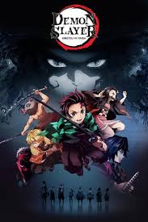

Article is hereKimetsu No Yaiba
Written by Sheraz Farooqi
The Demon Slayer series is, based on Koyoharu Gotoge's dark fantasy manga, was given the top spot in the survey domestically and internationally with 49% of responders graded the series with "highly satisfied." The series rose to superstardom in 2019, boasting breathtaking animation and a strong premise. Following the story of a kind-hearted protagonist, Demon Slayer focuses on a boy named Tanjiro who is thrust into fighting demons on a quest to save his sister. Standing alongside Demon Slayer, was Attack On Titan, which entered aired its third season. JoJo's Bizarre Adventure: Golden Wind, came in at third place, with the highly successful series continuing to resonate with audiences. 2019 had a strong year of anime debuts and continuations, making Demon Slayer's recognition that much more significant. The success reverberates through the television screen but also the original pages. The manga of Demon Slayer outsold the supremely popular One Piece.Demon Slayer: Kimetsu no Yaiba marks a return to classic anime in structure and feel. With its contemporaries becoming more complex and layered, Demon Slayer is comfortable with being simple and clean. There is a sense of kindness and innocence to the main character in Tanjiro that makes him compelling while the darkness of the plot and hefty stakes make the series feel fresh and engaging.